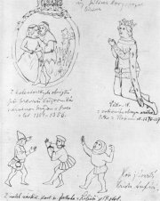

Marold: Bitva u Lipan
Aleš: Setkání Jiøího z Podìbrad s Matyášem Korvínem

Aleš: Jan Sladkı Kozina
|
ÈESKÁ HISTORICKÁ PRÓZA
Na rozdíl od autorù romantickıch historickıch próz si realisté dìjiny ménì idealizovali. Studovali peèlivìji historické prameny a více je respektovali. Pøesto si mnohé museli vymıšlet. Nìkdy chápali líèení historickıch zvratù jako paralelu k souèasnosti. Spisovatelé ukazovali, jakı mìly historické události vliv na osudy obyèejnıch lidí. Zobrazovali nejen slavné historické postavy, ale také øadové pøíslušníky rùznıch spoleèenskıch vrstev – vìtšinou jako urèité reprezentativní typy sociálních skupin nebo lidskıch charakterù. Spisovatelé uívali archaismy a historismy, aby se minulosti pøiblíili také jazykem. Jejich knihy byly daleko ètivìjší ne vìdecká historická pojednání, a proto dokázaly dìjiny pøiblíit øadovım ètenáøùm.
V Èechách plnila historická beletrie také mimoestetické funkce. Byla náhrakou za chybìjící politické svobody a národní sebeurèení. Autoøi chtìli v lidech posilovat vlastenectví a národní uvìdomìní, snaili se ètenáøe vychovávat i bavit. První historické prózy èeskıch realistù pocházejí ze 70. let 19. století. Tento ánr byl ovšem oblíbenı ještì zaèátkem 20. století.
Historické námìty maloval Jaroslav Èermák (1830-1878), Mikoláš Aleš (1852-1913), Václav Broík (1851-1901) nebo Ludìk Marold (1865-1898), autor panoramatického vıjevu Bitva u Lipan.
Broík: Jan Hus na koncilu kostnickém
|
Svìtová historická próza
Ze zahranièních autorù se historické beletrii vìnoval Polák Henryk Sienkiewicz (1846-1916), nositel Nobelovy ceny za literaturu a autor románù Køiáci nebo Quo vadis o hrùzovládì øímského císaøe Nerona. Gustave Flaubert napsal román Salambo o válkách mezi starovìkım Øímem a Kartágem. Za historickı román lze povaovat i Tolstého Vojnu a mír. Realisté se ale vìnovali pøedevším souèasnosti a minulost je pøíliš nelákala.
Èteš historické romány? Proè?
Které autory máš nejradìji? Pøedstav jednoho z nich v samostatném referátu.
Pøelo vıraz „quo vadis“ do èeštiny.
Jakı je rozdíl mezi archaismem a historismem z hlediska nauky o slovní zásobì?
|
Alois Jirásek (1851-1930)
Jirásek se narodil v Hronovì a zemøel v Praze. Pùvodnì chtìl bıt malíøem, ale z existenèních dùvodù zvolil historii. Pùsobil jako støedoškolskı uèitel dìjepisu v Litomyšli a Praze. Pøátelil se s kreslíøem Mikolášem Alšem. Rozsah jeho díla je obdivuhodnı. Ve svıch prózách zmapoval celou èeskou historii. Pro dìti sepsal Staré povìsti èeské. Epochu husitství líèí trilogie Mezi proudy, Proti všem a Bratrstvo. O vládì Jiøího z Podìbrad pojednává nedokonèenı román Husitskı král a pøevyprávìní cestopisu Václava Šaška z Bíøkova Z Èech a na konec svìta. Pobìlohorské období zachytil v románech Temno, Psohlavci, Skály nebo Skaláci. Poèátky národního obrození popisuje F.L.Vìk. Na pøelomu 18. a 19. stol. se odehrává románová kronika U nás. Revoluèní rok 1848 líèí Filosofská historie. Psal také divadelní hry – historické Jan ika, Jan Hus a Jan Roháè i realistické – Vojnarka, Otec nebo Kolébka. Nejznámìjší je ovšem pohádkové drama Lucerna.
Zjisti, které další knihy Jirásek napsal. O èem pojednávají?

Aleš: Plakát na Sebrané spisy Aloise Jiráska
Jirásek hledal podklady pro svá díla v archivech, ale ne vdy se zcela drel historické skuteènosti. Postavy pøemisoval do jiné doby, leccos si musel domyslet atd. Chtìl ètenáøe vzdìlávat a vychovávat. Snail se historii pøiblíit laikùm. Svım dílem pøispìl k vytvoøení øady národních mıtù – husitství a obrození jako vrchol èeskıch dìjin, baroko jako doba temna.
V èem Jiráskova koncepce èeskıch dìjin neodpovídá pravdì?
Zdenìk Nejedlı (1878-1962)
Muzikolog a marxistickı literární vìdec Zdenìk Nejedlı byl velkım zastáncem Jiráska. V dobì meziváleèné ho bránil proti útokùm levicové kritiky a po roce 1948 vydal Jiráskovy spisy v obrovském nákladu, aby se dostaly do kadé domácnosti. Nejedlı vyzdvihoval v Jiráskovì díle kolektivnost a revoluènost knih o husitství nebo protikatolické zamìøení Temna, èím jeho odkaz ještì více schematizoval...
Co víš o Nejedlém?
Adolf Liebscher: Vılet na Øíp
|
Alois Jirásek: Staré povìsti èeské
Staré povìsti èeské psal Jirásek pøímo pro mláde. První èást knihy obsahuje nejstarší èeské báje o pøíchodu praotce Èecha, Krokovi, Bivojovi, Libuši, Pøemyslovi, dívèí válce, Horymírovi a lucké válce. Další povìsti zahrnují dobu køesanskou. Vyprávìjí o králích Svatoplukovi a Jeèmínkovi, rytíøi Bruncvíkovi, bílé paní nebo zbojníku Janošíkovi. Znaènou pozornost Jirásek vìnoval staré Praze – ito kouzelník, Staromìstskı orloj, O Daliborovi z Kozojed, Ze idovského Mìsta èi Faustùv dùm. Kniha konèí proroctvími Sibyly a slepého mládence. Poslední je povìst o blanickıch rytíøích.
Alois Jirásek: Proti všem
Druhá z vıpravnıch románovıch trilogií o husitství Proti všem líèí léta 1419 a 1420. Èasovì navazuje na trilogii Mezi proudy o poèátcích husitského hnutí a pøedchází tøídílnému Bratrstvu o osudech zbytkù táborskıch vojsk, která se po bitvì u Lipan uchılila pod vedením Jana Jiskry z Brandısa na Slovensko. První èást trilogie Proti všem nese název Skonání vìku a líèí zaloení Tábora, Kruciata popisuje støet mezi vojsky Jana iky z Trocnova a Zikmunda Lucemburského na praském Vítkovì a poslední èást Boí zástup se zamìøuje na husitské sekty, pøedevším tábory a adamity. Na tomto historickém pozadí se odehrává milostnı pøíbìh knìze Bydlinského a Zdeny (dcery Ctibora z Hvozdna), kterı konèí jejich tragickou smrtí, kdy je upálí zfanatizovanı dav.
Alois Jirásek: Temno
Dìj románu Temno se odehrává na zaèátku 18. století v Praze a Skalce u Opoèna. Protireformace zasáhla celou spoleènost. Jezuité pátrají v domì protestantského myslivce Machovce po zakázanıch knihách. Ten se sice zachrání útìkem do itavy, ale jeho dìti – Helenka a Tomáš skonèí v katolickıch rodinách. Tomáše má pøevychovat praskı sládek Bøezina, pøesto se dále stıká s tajnımi nekatolíky. Helenka ije u Bøezinovy tchınì a zamiluje se do Jiøíka Bøeziny, kterého èeká dráha katolického knìze. Machovec chce, aby za ním dìti odešly do itavy, ale Helenka je odhodlána zùstat s Jiøíkem v Èechách. Kniha konèí slavnostní kanonizací Jana Nepomuckého. Jako symbol fanatické rekatolizace je zde vylíèen jezuita Koniáš.
Alois Jirásek: F.L.Vìk
Hlavní postavou pìtidílného ivotopisného románu je František Ladislav Vìk. Vìk se z rodné Dobrušky dostává jako student do Prahy. Spøátelí se zde s øadou obrozencù – páterem Vrbou, Václavem Thámem, Hnìvkovskım nebo Krameriem. Zamiluje se do nìmé dcery úøedníka Butteaua Pauly, ale tu si nakonec vezme jeho pøítel Thám. Vìk se vrací do rodné vsi, pøebírá po otci obchod, pùjèuje sousedùm knihy a šíøí myšlenky èeskıch vlastencù. Uspoøádá vıpravu do Prahy ke korunovaci Leopolda II., kam jede spoleènì s budoucí manelkou Márinkou. Thám upadá do bídy a koèuje na venkovì s nìmeckou hereckou spoleèností. Poár Dobrušky roku 1800 postihne i Vìka, ale s pomocí pøátel se zase vzmùe. Poslední dva díly románu vyprávìjí o osudech Vìkova syna Vašíka.
|

Pøevyprávìj nejznámìjší báje ze Starıch povìstí èeskıch.
Srovnej Jiráskovy povìsti s pøíbìhy zachycenımi v èeskıch kronikách.
Ze kterıch pramenù Jirásek vycházel?
Znáš i jiné povìsti, které Jirásek nezpracoval?

Pøípravná kresba Aloise Jiráska k románu Mezi proudy
Jak si poèínali husité pøi dobıvání Pøibìnic?
Která pøikázání Desatera porušovali?
Co si myslíš o praanech, táborech a „boím zástupu“?
Proè nese román název Proti všem?
Jak nazıváme ètyødílnı a pìtidílnı románovı cyklus?
Èermák: Po bitvì na Bílé Hoøe
Jak je v ukázce vylíèen jezuita Koniáš? Byl opravdu takovı?
Název Jiráskova románu Temno se stal symbolem celého pobìlohorského období èeské historie. Šlo opravdu o dobu temna? Pro koho?
Odpovídá toto pojetí dìji románu?
Co bylo v dobì baroka pozitivní a co negativní? Jak se na toto období díváš ty?
Kdy psal Jirásek Temno? Myslíš si, e to mìlo nìjakı vliv na obsah románu?
Kašparova ilustrace k románu F.L.Vìk
Které další knihy ilustroval Adolf Kašpar (1877-1934)?
Pøedlohou pro postavu F.L.Vìka byl národní buditel F.V.Hek. Co mají spoleèného?
Co víš o Thámovi, Krameriovi a Hnìvkovském? Kteøí buditelé v románu vystupují?
Charakterizuj postavu jazykového puristy.
V èem jde jeho metoda tvoøení novıch slov proti duchu samotné èeštiny?
|
Zikmund Winter (1846-1912)
Winter se narodil v Praze, zesnul v rakouském Reichenhallu. Po otci pøevzal práci zvoníka. Vystudoval Akademické gymnázium a historii na univerzitì. Uèil na støedních školách v Pardubicích, Rakovníku a Praze.
Studoval archivní materiály a psal historická pojednání – V mìšanské svìtnici starodávné nebo Zlatá doba mìst èeskıch. Vìnoval se hlavnì povídkové tvorbì – Rakovnické obrázky (Nezbednı bakaláø), Rozina sebranec. Vıjimkou je román Mistr Kampanus.
|
Zikmund Winter: Mistr Kampanus
ivotopisnı román Mistr Kampanus se odehrává v letech 1612 a 1622. Jan Kampanus pøednáší na Karlovì univerzitì. Jeho smysl pro èest a spravedlnost mu zabrání dát doporuèení slabému studentovi Mollerovi. Ten ale všemi prostøedky usiluje o profesuru. Po bitvì na Bílé hoøe sleduje Kampanus s hrùzou exekuci 27 èeskıch pánù na Staromìstském námìstí. Popraven je i rektor univerzity Jessenius. Mollerus se zmocní univerzitní pokladnice i insignií. Aby Kampanus zachránil školu pøed pøevzetím jezuity, pøestoupí na katolickou víru a stává se rektorem. Jeho obì ale byla zbyteèná – Karolinum pøipadlo jezuitùm z Klementina a Kampanus musí odejít. Rezignovanı uèitel se nakonec otráví utrejchem.
|

Charakterizuj postavu Mollera.
Jak Kampanus proívá pobìlohorské události?
Jan Kampanus Vodòanskı skuteènì il. Srovnej jeho osudy s románovou postavou.
|
Václav Beneš Tøebízskı
(1849-1884)
Tento knìz se narodil v Tøebízi u Slaného a zemøel v Mariánskıch Lázních. Psal hlavnì kratší prózy – Povídky karlštejnského havrana, Levohradecká povídka, V èerváncích a lesku kalicha, Pobìlohorské elegie nebo Z rùznıch dob. Je autorem románù Aneka Pøemyslovna, Královna Dagmar, Trnová koruna a Bludné duše.
|
Václav Beneš Tøebízskı: Královna Dagmar
Hlavní postavou románu Královna Dagmar je dcera Pøemysla Otakara I. a Adléty Míšeòské Markéta (1186-1213), která se vdala za dánského krále Valdemara. Pomáhala svému mui urovnat vladaøské spory a v dobì moru peèovala o prosté obyvatele. Dánové si ji natolik oblíbili, e se stala hrdinkou øady písní. Nazıvali ji Dagmar, co znamená „denní paní“. Autor èerpal historickı materiál v Palackého Dìjinách národu èeského, odtud zøejmì pramení negativní pohled na Nìmce a vyzdvihování slovanského ivlu.
Další autoøi a jejich díla
Josef Svátek: Pamìti katovské rodiny Mydláøù v Praze, Tajnosti praské, Majestát Rudolfa II.
August Sedláèek: Sbírka povìstí historickıch lidu èeského v Èechách, na Moravì a ve Slezsku
Teréza Nováková: Jan Jílek, Drašar
|

V èem Dagmar pøipomíná svìtici?
Proè nebyla svatoøeèena?
Které èeské svìtice znáš? Èím prosluly?
Znáš i jiná díla o královnì Dagmar? Kdo je napsal?
|
Internetové stránky
Jirásek: O Libuši, Staré povìsti èeské
Winter: Zlatá doba mìst èeskıch
Tøebíz, skanzen
Feøtek: Blaník, èlánek
Exkurze
Marold: Bitva u Lipan, Praha
Marold: Bitva u Lipan, Praha
Jiráskùv Hronov, pøehlídka amatérskıch divadelních souborù
Tøebíz, skanzen

Karel Javùrek: Smrt Jana iky z Trocnova
|
Doporuèená èetba
Aleš, Mikoláš: Špalíèek národních písní a øíkadel, Odeon, Praha 1971
Aleš a Jirásek, Listy dvou pøátel, ELK, Praha 1947
Beneš Tøebízskı, Václav: Královna Dagmar, Vyšehrad, Praha 1989
Beneš Tøebízskı, V.: Z letopisù a kronik, Vyšehrad, Praha 1950
Dílo Mikoláše Alše (13 svazkù)
Janáèková, Jaroslava: Alois Jirásek, Melantrich, Praha 1987
Jirásek, Alois: F.L.Vìk (5 svazkù)
Jirásek, A.: Husitská trilogie, SNKLHU, Praha 1955 (dramata Jan Hus, Jan ika, Jan Roháè)
Jirásek, A.: Odkaz národu (32 svazkù), ed. Z.Nejedlı
Jirásek, A.: Psohlavci, Historickı obraz, SNDK, Praha 1951
Jirásek, A.: Staré povìsti èeské, Odeon, Praha 1985
Jirásek, A.: Vojnarka, Otec, Lucerna, SNKLHU, Praha 1955 (dramata)
Jirásek, A.: Z mıch pamìtí, Mladá fronta, Praha 1980
Johanides, Josef: František Vladislav Hek, Melantrich, Praha 1976
Nejedlı, Zdenìk: Alois Jirásek, Svoboda, Praha 1949
Pešat, Zdenìk: Boj o Aloise Jiráska v zrcadle kritiky, Praha 1954
Sienkiewicz, Henryk: Quo vadis
Stejskal, Martin: Labyrint tajemna aneb Prùvodce po magickıch místech Èeskoslovenska, Paseka, Praha 1991
Stuchlı, F., Šach, J.: Nedokonèená pou, Ètení o Václavu Beneši Tøebízském, Praha 1959
Winter, Zikmund: Mistr Kampanus, Èeskoslovenskı spisovatel, Praha 1974
Winter, Z.: Rozina sebranec a jiné prózy, Odeon, Praha 1966
|
Vypracuj písemnı referát o nìkteré z uvedenıch knih.
Vyber nejdùleitìjší události z èeské historie. O jedné z nich napiš povídku.
Jak tato událost zasáhla do ivota lidí?

František Èermák: Dalibor v aláøi
|
|